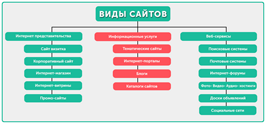

Что такое SEO?
SEO – это аббревиатура фразы «Search Engine Optimization», что означает: «Поисковое Продвижение и Оптимизация».
СЕО – это действия, направленные на повышение позиций сайта в выдаче поисковых систем, что ведет к увеличению посещаемости с поисковиков.
К SEO можно также отнести работы над сайтом связанные с повышением таких показателей, как:
-
- тематический индекс цитирования Яндекса (тИЦ);
- Page Rank Google (PR);
- траст сайта (доверие, Trust).
Юзабилити
Юзабилити (от английского usability — "удобство использования) — это качественная оценка простоты и комфорта работы с сайтом. Пользователь должен без труда находить нужную информацию, не теряясь в функционале и многочисленных страницах, и при этом получать эстетическое удовольствие от работы с ресурсом.
Почему важно соблюдать принципы юзабилити сайтов?
Конверсия. Правильно продуманная навигация подтолкнет пользователя выполнить целевое действие: позвонить в компанию, скачать прайс-лист, заказать товар, воспользоваться услугой и т.д. Важно грамотно выстроить повествование и структуру, ведь если посетитель задумается хотя бы на несколько секунд или не сразу поймет, что делать дальше — можно его потерять.
Посещаемость. Пользователь вернется на сайт только в том случае, если ему понравится с ним работать. А потому ресурс должен быть удобным и понятным со всех позиций: текст, навигация, интерфейс, последовательность действий и т.д.
Классификация сайтов
Сайт-визитка – обычно состоит из нескольких страниц и имеет уникальный, но простой и функциональный дизайн; идеально подходит для компаний, которые хотят разместить информацию о себе и своих услугах в Интернете; основные разделы сайта: «О компании», «Продукция или услуги», «Прайс-листы», «Контактная информация»; сайт-визитка используется предприятиями, организациями и частными лицами.
Корпоративный информационный web сайт – необходим для автоматизации внутреннего документооборота, учёта показателей компании, управления персоналом, может быть оснащён функциями обмена информацией между удалёнными филиалами; корпоративный сайт позитивно влияет на репутацию и имидж компании; дизайн должен соответствовать фирменному стилю компании; чаще всего, включает «администраторскую часть» для создания и изменения контента, позволяющую менеджеру или секретарю компании добавлять или менять новости, информационные статьи, справочную и прочую информацию на сайте; используется минимум графики, основной упор идет на текст.
Что такое SEO?
 SEO – это аббревиатура фразы «Search Engine Optimization», что означает: «Поисковое Продвижение и Оптимизация».
SEO – это аббревиатура фразы «Search Engine Optimization», что означает: «Поисковое Продвижение и Оптимизация».
СЕО – это действия, направленные на повышение позиций сайта в выдаче поисковых систем, что ведет к увеличению посещаемости с поисковиков.
К SEO можно также отнести работы над сайтом связанные с повышением таких показателей, как:
-
- тематический индекс цитирования Яндекса (тИЦ);
- Page Rank Google (PR);
- траст сайта (доверие, Trust).
Юзабилити
 Юзабилити (от английского usability — "удобство использования) — это качественная оценка простоты и комфорта работы с сайтом. Пользователь должен без труда находить нужную информацию, не теряясь в функционале и многочисленных страницах, и при этом получать эстетическое удовольствие от работы с ресурсом.
Юзабилити (от английского usability — "удобство использования) — это качественная оценка простоты и комфорта работы с сайтом. Пользователь должен без труда находить нужную информацию, не теряясь в функционале и многочисленных страницах, и при этом получать эстетическое удовольствие от работы с ресурсом.
Почему важно соблюдать принципы юзабилити сайтов?
Конверсия. Правильно продуманная навигация подтолкнет пользователя выполнить целевое действие: позвонить в компанию, скачать прайс-лист, заказать товар, воспользоваться услугой и т.д. Важно грамотно выстроить повествование и структуру, ведь если посетитель задумается хотя бы на несколько секунд или не сразу поймет, что делать дальше — можно его потерять.
Посещаемость. Пользователь вернется на сайт только в том случае, если ему понравится с ним работать. А потому ресурс должен быть удобным и понятным со всех позиций: текст, навигация, интерфейс, последовательность действий и т.д.
Классификация сайтов
Сайт-визитка – обычно состоит из нескольких страниц и имеет уникальный, но простой и функциональный дизайн; идеально подходит для компаний, которые хотят разместить информацию о себе и своих услугах в Интернете; основные разделы сайта: «О компании», «Продукция или услуги», «Прайс-листы», «Контактная информация»; сайт-визитка используется предприятиями, организациями и частными лицами.
Корпоративный информационный web сайт – необходим для автоматизации внутреннего документооборота, учёта показателей компании, управления персоналом, может быть оснащён функциями обмена информацией между удалёнными филиалами; корпоративный сайт позитивно влияет на репутацию и имидж компании; дизайн должен соответствовать фирменному стилю компании; чаще всего, включает «администраторскую часть» для создания и изменения контента, позволяющую менеджеру или секретарю компании добавлять или менять новости, информационные статьи, справочную и прочую информацию на сайте; используется минимум графики, основной упор идет на текст.
Шаблон сайта
Юзабилити сайта
Юзабилити (от английского usability — "удобство использования) — это качественная оценка простоты и комфорта работы с сайтом. Пользователь должен без труда находить нужную информацию, не теряясь в функционале и многочисленных страницах, и при этом получать эстетическое удовольствие от работы с ресурсом.
Почему важно соблюдать принципы юзабилити сайтов?
Конверсия. Правильно продуманная навигация подтолкнет пользователя выполнить целевое действие: позвонить в компанию, скачать прайс-лист, заказать товар, воспользоваться услугой и т.д. Важно грамотно выстроить повествование и структуру, ведь если посетитель задумается хотя бы на несколько секунд или не сразу поймет, что делать дальше — можно его потерять. К примеру, если, попав на главную страницу, он с первых же строк не узнает о сфере работы компании, не сориентируется, где находится и что делать дальше — он без сожалений закроет вкладку. Если он не найдет развернутых ответов на интересующие вопросы в виде статьи, видео, графики — произойдет то же самое.
Принципы юзабилити web-ресурса
1. Дизайн — залог доверия к сайту
Не перегружайте визуальную часть множеством деталей, цветов и динамичных элементов. Пользователя ничего не должно отвлекать от восприятия информации. А при длительном нахождении на ресурсе он не должен уставать от обилия контраста, плохой читабельности текста, разноплановой графики. Упор — на минималистичный дизайн: в сумме с уникальностью следует продумать сочетание цветов фона и шрифта, число и вид изображений.
2. Логичный структурированный контент
Один из главных факторов юзабилити — удобное восприятие текстов. Структура, оформление, информативность, логическая разбивка, оптимизация, отсутствие ошибок — все эти параметры важно учитывать при написании статьи. Если это длинный текст-руководство — сделайте оглавление в виде ссылок, чтобы пользователь мог быстро найти нужный раздел.
3. Важная информация — в левом углу
Посетители просматривают web страницу по F-образному шаблону: внимание концентрируется в верхнем левом углу и ограничивается первыми несколькими абзацами текста в убывающем порядке. Потому при распределении важной информации использование такой схему увеличит вероятность того, что посетитель быстро найдет нужные данные, увидит самое важное, бегло пробежавшись по разделу взглядом.
4. Общение с пользователем
Успешная регистрация, принятый заказ, несуществующая страница — человек должен быть всегда в курсе происходящего. Причем во всех подробностях. Если он зарегистрирован в системе — расскажите, что делать дальше, если заказ принят: укажите номер, время ожидания звонка, контактные данные; если попал на страницу 404 — как найти нужную информацию или куда вернуться.